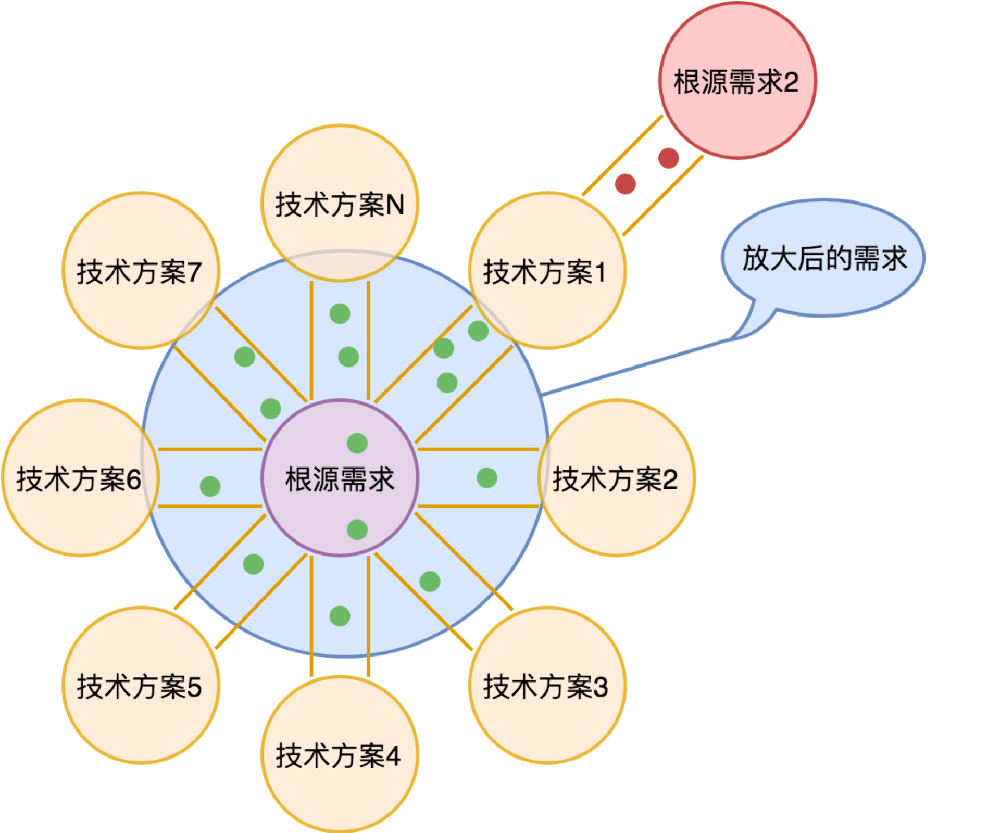
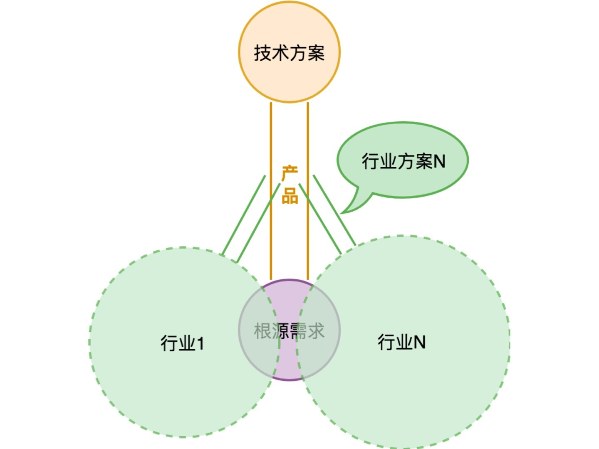
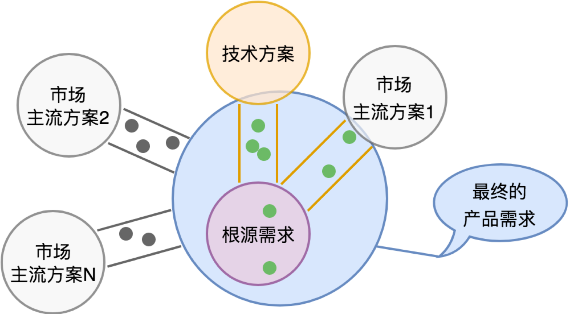

- 00 开篇词 怎样成长为优秀的软件架构师？.md
- 01 架构设计的宏观视角.md
- 02 大厦基石：无生有，有生万物.md
- 03 汇编：编程语言的诞生.md
- 04 编程语言的进化.md
- 05 思考题解读：如何实现可自我迭代的计算机？.md
- 06 操作系统进场.md
- 07 软件运行机制及内存管理.md
- 08 操作系统内核与编程接口.md
- 09 外存管理与文件系统.md
- 10 输入和输出设备：交互的演进.md
- 11 多任务：进程、线程与协程.md
- 12 进程内协同：同步、互斥与通讯.md
- 13 进程间的同步互斥、资源共享与通讯.md
- 14 IP 网络：连接世界的桥梁.md
- 15 可编程的互联网世界.md
- 16 安全管理：数字世界的守护.md
- 17 架构：需求分析 (上).md
- 18 架构：需求分析 (下) · 实战案例.md
- 19 基础平台篇：回顾与总结.md
- 20 桌面开发的宏观视角.md
- 21 图形界面程序的框架.md
- 22 桌面程序的架构建议.md
- 23 Web开发：浏览器、小程序与PWA.md
- 24 跨平台与 Web 开发的建议.md
- 25 桌面开发的未来.md
- 26 实战（一）：怎么设计一个“画图”程序？.md
- 27 实战（二）：怎么设计一个“画图”程序？.md
- 28 实战（三）：怎么设计一个“画图”程序？.md
- 29 实战（四）：怎么设计一个“画图”程序？.md
- 30 实战（五）：怎么设计一个“画图”程序？.md
- 31 辅助界面元素的架构设计.md
- 32 架构：系统的概要设计.md
- 33 桌面开发篇：回顾与总结.md
- 34 服务端开发的宏观视角.md
- 35 流量调度与负载均衡.md
- 36 业务状态与存储中间件.md
- 37 键值存储与数据库.md
- 38 文件系统与对象存储.md
- 39 存储与缓存.md
- 40 服务端的业务架构建议.md
- 41 实战（一）：“画图”程序后端实战.md
- 42 实战（二）：“画图”程序后端实战.md
- 43 实战（三）：“画图”程序后端实战.md
- 44 实战（四）：“画图”程序后端实战.md
- 45 架构：怎么做详细设计？.md
- 46 服务端开发篇：回顾与总结.md
- 47 服务治理的宏观视角.md
- 48 事务与工程：什么是工程师思维？.md
- 49 发布、升级与版本管理.md
- 50 日志、监控与报警.md
- 51 故障域与故障预案.md
- 52 故障排查与根因分析.md
- 53 过载保护与容量规划.md
- 54 业务的可支持性与持续运营.md
- 55 云计算、容器革命与服务端的未来.md
- 56 服务治理篇：回顾与总结.md
- 57 心性：架构师的修炼之道.md
- 58 如何判断架构设计的优劣？.md
- 59 少谈点框架，多谈点业务.md
- 60 架构分解：边界，不断重新审视边界.md
- 61 全局性功能的架构设计.md
- 62 重新认识开闭原则 (OCP).md
- 63 接口设计的准则.md
- 64 不断完善的架构范式.md
- 65 架构范式：文本处理.md
- 66 架构老化与重构.md
- 67 架构思维篇：回顾与总结.md
- 68 软件工程的宏观视角.md
- 69 团队的共识管理.md
- 70 怎么写设计文档？.md
- 71 如何阅读别人的代码？.md
- 72 发布单元与版本管理.md
- 73 软件质量管理：单元测试、持续构建与发布.md
- 74 开源、云服务与外包管理.md
- 75 软件版本迭代的规划.md
- 76 软件工程的未来.md
- 77 软件工程篇：回顾与总结.md
- 加餐 如何做HTTP服务的测试？.md
- 加餐 实战：“画图程序” 的整体架构.md
- 加餐 怎么保障发布的效率与质量？.md
- 热点观察 我看Facebook发币（上）：区块链、比特币与Libra币.md
- 热点观察 我看Facebook发币（下）：深入浅出理解 Libra 币.md
- 用户故事 站在更高的视角看架构.md
- 答疑解惑 想当架构师，我需要成为“全才”吗？.md
- 结束语 放下技术人的身段，用极限思维提升架构能力.md
- 课外阅读 从《孙子兵法》看底层的自然法则.md
17 架构：需求分析 (上)
你好，我是七牛云许式伟。
前面我们多次提到过，架构的第一步是需求分析。那么，为什么要做需求分析？如何做好需求分析？
今天让我们一起聊一聊需求分析这个话题。
关于需求分析的那些事
为何要做需求分析？
首先，当然是因为我们做软件本身就是为了满足用户需求。那么，用户需求到底为何，我们需要清楚定义。
其次，需求边界定义的需要。用户需求理清楚了，不代表产品理清楚了。用户需求的满足一定会有行业分工，我们做什么，合作伙伴做什么，需要厘清大家的边界。
最后，架构设计的需要。架构需要切分子系统，需要我们梳理并对用户需求进行归纳与抽象。架构还需要防止过度设计，把简单的事情复杂化。
但什么是过度设计？不会发生的事情你考虑了并且为它做足了准备，就是过度设计。所以判断是不是过度设计是很困难的，需要对需求未来演化有很强的判断力。
从这几个维度来看，需求分析过程必然会涉及以下这些内容。
- 我们要面向的核心用户人群是谁？
- 用户原始需求是什么？最核心问题是哪几个？
- 已经有哪些玩家在里面？上下游有哪些类型的公司，在我们之前，用户是怎么解决他们的问题的？我们的替换方案又是怎样的？
- 进而，我们的产品创造的价值点是什么？用户最关注的核心指标是什么？
- 用户需求潜在的变化在哪些地方？区分出需求的变化点和稳定点。
当然，我并不是说，我们应该在需求分析的文档中完整地回答这些问题。需求分析文档目的并不是回答这些问题。但是在我们梳理需求的过程中，我们无法回避对这些问题的思考。
可能有人会认为，这些问题是 CEO 或产品经理这样的角色需要回答的，而不是架构师需要回答的。
某种意义上来说这句话没错。回答这些问题的首要责任方是 CEO 或产品经理。他们有责任让团队中的每一个人理解我们的产品逻辑。
但是，如果架构师只是被动地接受产品需求，以按图索骥的方式来做架构设计，是不足以成为顶级架构师的。原因在于两点。
一方面，用户需求的深层理解是很难传递的。 你看到的产品文档，是产品经理和用户沟通交流后的二次理解，是需求的提炼和二次加工，很难原汁原味地传递用户的述求。
所以架构师自己亲身近距离地接触用户，和用户沟通，去体会用户的述求是非常有必要的。
况且，大部分人并不会那么仔仔细细地阅读别人写的文档。当然这不完全是看文档的人单方面的原因，如果团队文档平均质量不高的话，也会影响到阅读者的心态。
另一方面，产品设计过程需要架构师的深度参与，而不是单向的信息传递。 产品经理非常需要来自架构师的建设性意见。
为什么我会有这样的看法呢？这涉及我对产品的理解。产品本身是运用先进的技术来满足用户需求过程的产物。
用户需求的变化是缓慢的，真正改变的是需求的满足方式。而需求满足方式的变化，深层次来说，其背后往往由技术迭代所驱动。
从这个角度来说，产品是桥，它一端连接了用户需求，一端连接了先进的技术。 产品经理是需要有技术高度的，他不一定要深刻了解技术的原理，但是一定要深刻理解新技术的边界。
某项技术能够做什么，不能做到什么，顶级产品经理甚至比实现这项技术的开发人员还要清楚。
认为产品经理不需要理解技术，这可能是我们普遍存在的社会现象，但很可能并不符合这个岗位的内在诉求。
回到架构师这个角色。
我经常说一个观点，产品经理和架构师其实是一体两面。两者都需要关心用户需求与产品定义。
只不过产品经理更多从用户需求出发，而架构师更多从技术实现出发，两者是在产品这座桥的两端相向而行，最终必然殊途同归。
这也是我为什么说架构师需要深度参与产品设计的原因。产品经理很可能会缺乏他应该有的技术广度，这就需要架构师去补位。产品定义过程需要反复推敲琢磨，并最终成型。
需求分析并不是纯技术的东西，和编程这件事情无关。它关乎的是用户需求的梳理、产品的清晰定义、可能的演变方向。
需求分析的重要性怎么形容都不过分。准确的需求分析是做出良好架构设计的基础。
前面我也说过，我个人认为架构师在整个架构设计的过程中，至少应该花费三分之一的精力在需求分析上。
这也是为什么很多非常优秀的架构师换到一个新领域后，一上来并不能保证一定能够设计出良好的架构，而是往往需要经过几次迭代才趋于稳定。
原因就在于：领域的需求理解是需要一个过程的，对客户需求的理解不可能一蹴而就。
怎么做需求分析
那么怎么才能做好需求分析？
首先，心态第一，心里得装着用户。 除了需要 “在心里对需求反复推敲” 的严谨态度外，对用户反馈的尊重之心也至关重要。
其次，对问题刨根究底，找到根源需求。 有很多用户反馈需求的时候，往往已经带着他自己给出的解决方案。
这种需求反馈已经属于二次加工的需求，而非原始需求。这个时候我们要多问多推敲，把它还原到不带任何技术实现假设的根源需求。

如上图所示，根源需求可能会有非常非常多的技术方案可以满足它。我们上面示意图中的小圆点是一个个用户反馈的需求。在用户提这些需求的时候，往往可能会带着他熟悉的技术方案的烙印。
对于那些我们明显不关心的需求，如上图的小红点，相对容易排除在外。毕竟产品的边界意识大家还是会有的，产品不可能无限制膨胀下去。
但是对于上面的小绿点，决策上就比较难了。不做？可能会丢了这个客户。做？如果我们手放宽一点，最后产品需求就会被放大（如上图中蓝色的圆圈），做出一个四不像的产品。
最后，在理清楚需求后，要对需求进行归纳整理。 一方面，将需求分别归类到不同的子类别中。另一方面，形成需求的变化点和稳定点的基本判断。
前面我们也强调过：在需求分析时，要区分需求的变化点和稳定点。稳定点往往是系统的核心能力，而变化点则需要对应地去考虑扩展性上的设计。
要注意的是，在讨论需求的变化点和稳定点的时候，我们需要有明确参考的坐标系。在不同视角下，稳定点和变化点的判断是完全不同的。
所以需要明确的一点是，当我们说需求的变化点和稳定点时，这是站在我们要设计的产品角度来说的。
比如我们要设计一台计算机，那么多样化的外部设备是一个变化点。但是如果我们今天是在设计一台显示器，问题域就完全变了，需求的变化点和稳定点也就完全发生了变化。
本质上来说，对变化点的梳理，是一次产品边界的确立过程。所谓的开放性设计，就是说我把这个功能交给了合作伙伴，但是我得考虑怎么和合作伙伴配合的问题。
开放性设计并不是一个纯粹的用户需求问题，它通常涉及技术方案的探讨。因此，产品边界的确立不是一个纯需求，也不是一个纯技术，而是两者合而为一的过程。
对变化点的梳理至关重要。产品功能必须是收敛的，必须是可完成的。
如果某个子类别的需求呈现出发散而无法收敛的趋势，这个事情，团队一定要坐下来一起去反复推敲。不断拷问，不断明确响应需求的正确姿势到底为何。
产品定义
需求分析的目标和最终结果，都是要最终形成清晰的产品定义。产品定义并不是简单的产品需求的归类。
上面我也说过，产品是桥，它一端连接了用户需求，一端连接了先进的技术。所以产品定义不可能做到和技术方案完全没关系。
首先，需要明确产品中有哪些元素，或者叫资源，以及这些资源的各类操作方式。 如果我们从技术的视角来理解，这就是定义对象和方法。当然这仅仅是这么理解，实际上一个我们技术上的对象方法，从产品需求角度会有多条路径的操作方式来达到相同的目的。
其次，需要对产品如何满足用户需求进行确认。 用户的使用场景未必全部是我们的产品所能直接满足的，面向特定的行业，有可能需要相应的行业解决方案，把我们的产品整合进去。-

- 我们要避免把行业方案视作产品的一部分。更多的情况下，需要我们更加开放的心态来看待这件事情，优先寻找合作伙伴来一起完成这类行业的需求覆盖。最后，产品定义还需要考虑市场策略，我们的产品如何进入市场，和既有市场格局中的其他主流解决方案的关系是什么样的。

我们希望获取的用户，可能大部分都已经有一个既有的产品和技术方案，在满足他的需求。在考虑如何让客户从既有方案迁移到我们的产品后，我们确定产品的边界时又会复杂很多。
在一些极其关键的市场，我们有可能会把迁移需求视作产品需求的一部分。但更多的情况下，我们产品上只为这些市场上的主流方案提供迁移路径，而不是完整的迁移方案。
为何架构课从基础平台开始？
很抱歉我说得很抽象，但是总结需求分析的方法论的确是一件很难的事情。
为什么我们谈架构会从 “基础平台” 讲起？为什么从硬件架构，到编程语言，再到操作系统，我们似乎绕了一大圈，还没有谈到架构？
有两个原因。
最直接的原因是 “基础平台” 是我们所依赖的环境，是我们应用的业务架构的一部分。越了解我们所处的环境，我们就越能够运用自如。
但还有一个重要的原因是架构的探讨容易过度抽象。 所以我并没有先长篇大论谈架构方法论，谈需求应该怎么怎么去分析，而是围绕着基础平台的演进过程来谈需求分析。
信息世界的构建过程，本身就是一个最宏大的架构实践。我们通过对信息世界的骨架构成的参悟，自然能够感悟到架构思维的要点。
学内功需要悟心，学架构也需要悟心。怎么准确研判需求，对需求演进进行预测，这并不是靠技术技能，而是靠谦和求取的心态。
所以我们第一章 “基础平台” 篇整体来说，内容介绍以产品的需求分析为主、核心技术原理为辅。我们尝试把整个基础平台融为一个整体，宏观上不留任何疑惑。
实际上这一章的内容很难做到只看一遍就可以，可能要时时看，反复看。还需要查阅一些资料，也可以与人一起探讨。当然，我们也欢迎留言一起交流。
这一章我们介绍的内容，大部分内容都有一些对应的经典书籍，在后面 “基础平台篇: 回顾与总结” 一讲中，我也会给大家推荐一些经典的图书。
但我们并不是要重复这些书籍中的内容。** 我们的关注点在于：一是构建信息世界的宏观骨架，二是需求演进。**
经典书籍虽然好，但是它们写作时候的历史背景和今天有很大不同。从架构视角来说，结合我们今天的现实情况来看，一方面我们可以总结今天区别于当初的所有变化，另一方面主动去思考为什么发生了这样的变化。以这样的视角去读经典书籍，会别有一番滋味。
结语
在我们介绍完第一章 “基础平台” 篇的所有内容后，今天我们终于正式开始谈架构思维。我们探讨的是架构的第一步：需求分析。
需求分析并不是纯技术的东西，和编程这件事情无关。它关乎的是用户需求的梳理、产品的清晰定义、可能的演变方向。
怎么提升需求分析能力，尤其是预判能力？
首先，心态第一，心里得装着用户。除了需要 “在心里对需求反复推敲” 的严谨态度外，对用户反馈的尊重之心也至关重要。
其次，对问题刨根究底，找到根源需求。
最后，对需求进行归纳整理。一方面，将需求分别归类到不同的子类别中。另一方面，形成需求的变化点和稳定点的基本判断。
需求分析的目标和最终结果，都是要最终形成清晰的产品定义。产品定义将明确产品的元素，明确产品的边界，与产业上下游、合作伙伴的分工。
为什么我们的架构课从日常最平常之处，我们日日接触的基础平台讲起？
你真了解它们吗？你真感悟到它们的不凡之处了吗？
学习架构，关键在于匠心与悟心。
用思考的方式去记忆，而不是用记忆的方式去思考。
如果你对今天的内容有什么思考与解读，欢迎给我留言，我们一起讨论。下一讲将是 “架构: 需求分析（下）· 实战案例”。
如果你觉得有所收获，也欢迎把文章分享给你的朋友。感谢你的收听，我们下期再见。
© 2019 - 2023 Liangliang Lee. Powered by gin and hexo-theme-book.